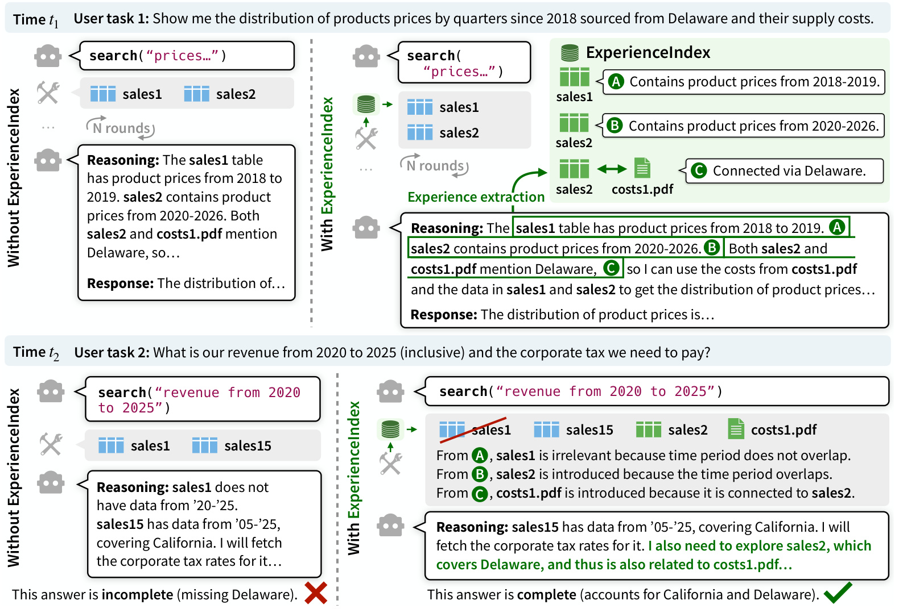
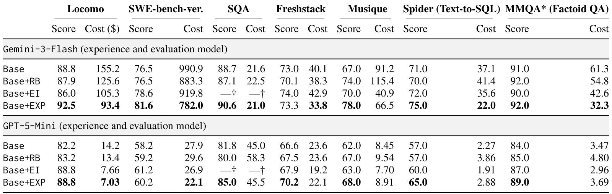
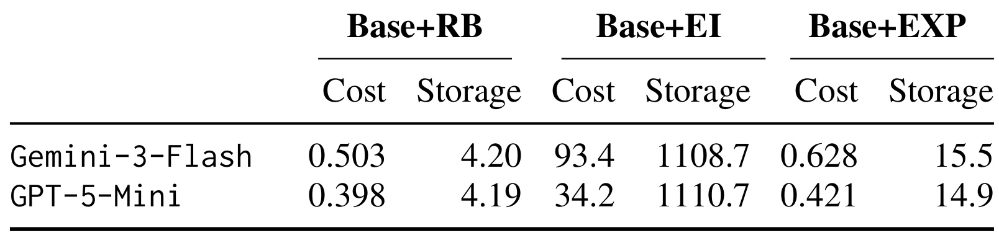
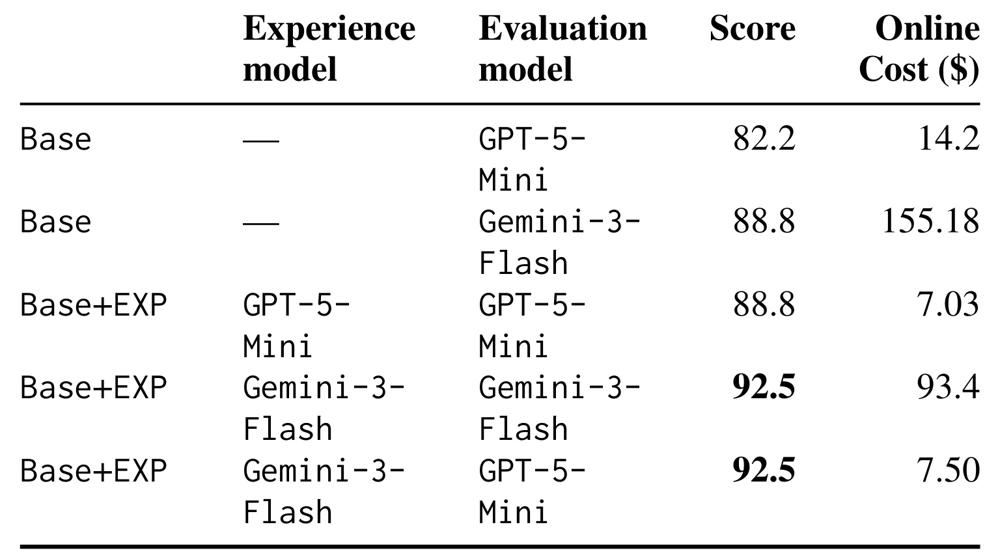
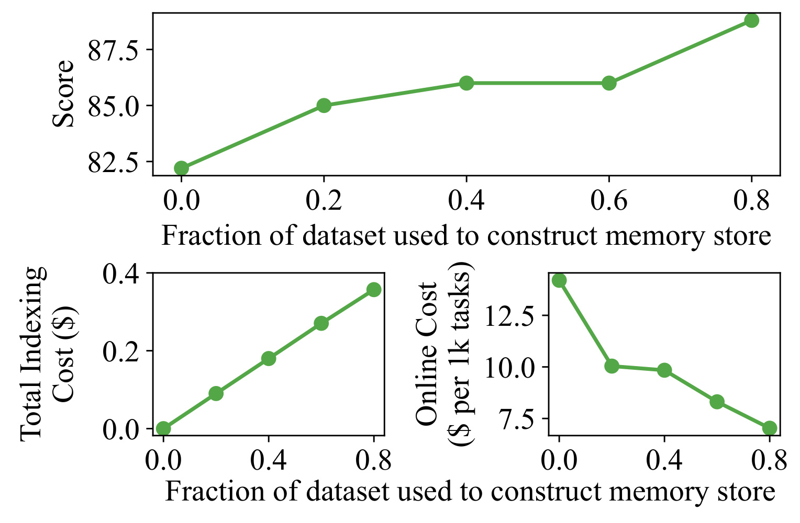
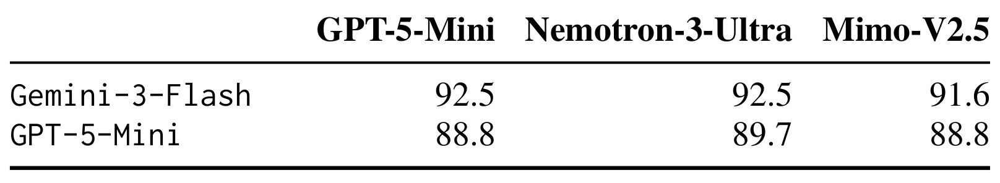
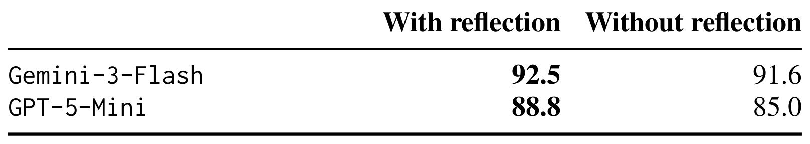

ExperienceIndex: Artifact-Grounded Memory / 以具体材料为锚点的智能体经验记忆
本文由 Peter Baile Chen、Geoffrey X. Yu、Xinming Liu、Samuel Madden、Dan Roth、Jacob Andreas、Doug Downey 和 Michael Cafarella 撰写，一作主机构为 MIT，合作机构包括 McKinsey & Company、Oracle AI 与 UPenn、AI2。论文于 2026 年 10 月 7 日首次公开，本笔记依据 2026 年 10 月 8 日核验的 v1 原文，归入 LLM 方向。唯一论文入口：ExperienceIndex。本轮未核验到独立代码或项目页，论文为预印本，会议录用状态未核验。
人类在同一批材料上反复解决任务时，会逐渐积累对具体材料的经验，从而更快找到新任务所需的完整证据。现有智能体缺少合适的机制来构建和复用这种材料经验，导致答案质量较低、在线成本较高；偏好、事实或抽象推理模式记忆不能充分保留这些材料特有的知识。
1. 背景和问题
1.1 共享材料上的反复工作为何仍然从头开始
这篇论文讨论的是一种相当常见、却容易被通用记忆概念掩盖的工作方式：用户面对同一个材料集合，连续提出不同问题。法律人员会反复查阅同批判例，咨询人员会围绕同一组报表回答不同经营问题，开发者会在同一个代码仓库中修复不同缺陷，科研助手会从相似的文献范围组织不同主题的综述。问题文字、答案形式和工具调用顺序会变化，但任务所依赖的文件、表格、文档及其相互联系并没有每次重新诞生。作者将这些可稳定指认的对象统称为材料，每个对象有标识、内容以及可选元数据，缺少标识时需要自动补齐。
初次探索一批材料时，智能体不仅获得一个答案，还完成了大量可重复利用的判断：某张表覆盖哪些年份，某段代码实现了哪项功能，某篇文档可以支撑哪种结论，两个文件通过什么实体联系起来。传统任务流程通常把这些判断埋在一次性的推理轨迹中。下次问题到来，搜索器仍然根据原始文字相似性给出候选，模型又要阅读、排除、跳转和核验。重复成本与证据遗漏因此一起出现：花更多检索轮次不必然找全相关材料，而答案看起来流畅也不能保证覆盖完整。
引言的例子把这个缺口说得很具体。第一次用户询问从特定地区采购的产品价格和供应成本，模型发现一张销售表覆盖较早时间，另一张表覆盖较晚时间，成本文档与第二张表通过 Delaware 联系起来。第二次用户问较新年份的收入与公司税，普通检索只给出不覆盖时间范围的旧表，以及只涉及 California 的另一张销售表。模型能据此写出一部分正确答案，却漏掉 Delaware。旧任务中的时间判断和关联关系本来足以改善新任务，问题在于系统没有把它们组织为可再次检索的材料经验。
这同时涉及相关性与完整性。相关性要求排除表面匹配、实际时间或主题不符的对象，完整性要求发现当前检索没有返回、但结论依赖的邻接对象。单纯扩大检索数量会同时引入噪声和上下文成本；单纯重排已有结果只能调整候选顺序，不能保证缺失材料进入候选池。ExperienceIndex 的目标是把历史使用经验变成新的检索信号，而不是让求解模型永久记住每个答案，也不是假定所有历史结论都可靠。
1.2 材料经验与用户记忆、推理记忆的区别
作者区分两类既有长期记忆。用户画像记忆以人为锚点，存储偏好、生日、地址、写作风格或会话事实，适合个性化交互；抽象推理记忆提炼可以迁移的解题策略，例如先澄清需求、列出适用定理，或者在网页中先使用筛选按钮。它们分别回答“这个用户是什么样”和“这个问题应该怎样处理”。本文提出另一种锚点：同一具体材料过去如何帮助完成某项任务，它包含什么能够证明结论的片段，以及它与其他材料有什么有意义的结构联系。
这种区别会改变记忆的组织单位。若只记住“查询收入时核对年份”，新任务仍要自行确定哪些表覆盖哪些年份；若保存某张表与过去任务的对应关系，就可以直接用它评估这张表对新问题是否合适。若只记住某个用户关心 Delaware，系统也不能知道该地区的成本文档与哪张销售表相连。经验必须绑定具体对象，并保留使用它的任务语境和证据片段，才能在新问题中产生可操作的材料选择。
另一条相关路线是离线语料增强：预先给所有对象生成摘要、用途说明、合成问答或图结构，以改善检索。作者指出，它缺乏真实下游任务的视角，可能加工很多从未被使用的对象，而且通常需要提前访问完整语料。本文采取按已执行任务增量积累的办法，记录实际出现过的材料。它避免全量扫描的前期负担，但也受到已有任务覆盖范围的约束。没有被历史任务接触过的对象不会凭空获得经验，所以记忆层需要和原搜索工具共存。
还必须区分“经验能迁移”和“答案能直接复用”。跨任务共享材料意味着历史记录能帮助定位证据，不意味着旧答案适用于新问题。时间范围、任务约束或当前文件版本都可能变化。作者要求模型重新评估经验相关性，并以当前材料优先。这条约束是材料经验有效的条件：索引保存的是寻找和解释证据的线索，最终结论仍须来自实际可见的对象。
从推荐系统视角看，本文没有提出点击率模型，也没有报告在线推荐收益，其联系在于内容理解、知识检索与证据完整性。一个反复分析同批商品资料或经营表格的助手，可以保存“哪个文档解释哪种属性、哪两类资料之间可连接”的经验。这里有研究价值的迁移对象是辅助检索层，而不是将语言模型的历史推理直接当成推荐特征。物品库更新频繁、用户访问权限不同、任务分布变化时，锚点稳定性和经验失效都需要额外处理；论文没有给出这些生产环节的成熟解决方案。
材料经验还有一个容易忽略的差别：它记录过去任务中的使用事实，而不是声称已经穷尽材料内容。某个文件上次只被读取一段代码，下次可能需要另一个未被使用的函数；一张表上次被判断与年份范围不匹配，也不意味着它对所有新任务都无用。贡献摘要因此必须与过去任务一起检索，不能固化成对象的永久相关性标签。作者用新查询重新分析经验的设计，正是在处理这种任务依赖关系。如果落地时把“曾经不相关”直接转成全局过滤规则，就会偏离论文机制并引入新的漏召回。
经验片段也不等于复制整个文件。保留被使用的部分可以减少重读，但片段周边上下文、字段定义或日期解释仍可能影响结论。原文要求当前材料优先，意味着模型遇到新问题必须有权回查对象，而不能只依赖摘要。这样才能同时保留经验带来的探索效率和原始证据的可核验性。
2. 方法
2.1 单材料经验与材料对经验
正文第 3.1 节首先规定经验的两种表示。单材料经验包含过去任务描述、贡献摘要和证据片段。任务描述记录材料曾被用于什么问题，贡献摘要说明它对那次回答起了什么作用，片段记录真正使用到的内容，并可附行号或偏移信息。三者共同避免把经验压缩成脱离上下文的事实。比如“这张表包含某些年份的价格”可以判断时间范围，引用位置则让模型不用重读整个文件就能回到关键证据。
材料对经验保存两个对象之间的结构关系。文档与表格可能通过同一实体相连，两张表可能存在可连接的列。作者强调的是有意义的关系，而非仅在同一上下文出现的机械共现。关系的用途是把已知相关材料作为入口，找到另一个可能被首轮搜索漏掉的对象。单材料经验主要帮助判断已有候选是否合适，材料对经验主要补足候选范围，这解释了为什么仅保存一类经验不足以实现完整设计。
表示是领域无关的，但不是内容无关的。表格经验依赖列、实体和连接条件，代码经验依赖文件或函数的实际作用，文档经验依赖被使用的段落。输入模态也受求解模型约束：纯文本模型能处理文本及可转录对象，多模态模型才可能抽取图像等经验。稳定的材料标识让经验跨任务持久化，具体片段让经验仍可回到原始证据。若工程实现只保留自然语言总结而丢掉对象标识，就失去了本文方法的基本锚点。

Figure 1 按两个时间点组织同一材料集合上的连续任务。上半部分中，第一次问题要求按季度分析特定地区的产品价格和供应成本，求解轨迹留下三个经验：A 记录旧销售表覆盖的年份，B 记录新销售表覆盖的年份，C 记录新销售表与成本文档通过地区相连。单材料贡献与材料对关系没有被混成一个笼统总结，它们分别绑定不同对象及连接。下半部分在新收入与税费问题中，左侧普通搜索只看到一部分材料；右侧记忆层利用A的年份说明排除旧表，利用B引入此前遗漏的新表，再利用C找到关联成本文档，模型才获得覆盖不同地区的证据。图中绿色区域表达的是经验库与注入位置，不能把它误读为新训练出来的模型。
这幅图也说明经验的形成与使用是两个阶段：过去的推理先成为抽取输入，新的查询再决定哪些经验适用。原生对象内部保留的推理框展示被比较的两种检索行为，属于方法图的一部分；真正的机制重点是对象身份、时间约束与关系如何决定材料集合，而非照抄框中的旧答案。如果搜索没有返回任何正确对象，文本查询检索仍可提供入口；如果经验不足，无法确定的原有对象必须保留。该例子是设计动机及流程说明，并非独立的定量实验。
2.2 从候选检索到相关性判断与邻居扩展
第 3.2 节的检索函数接收经验库、文本查询和可选材料标识集合。它先对查询进行嵌入，在所有单材料经验中按过去任务描述与贡献摘要的组合相似性取最相关经验。若原搜索工具返回了材料标识，还会限定到这些对象各自的经验集合，按同样原则选取相关经验，再合并查询检索与材料条件检索得到的候选对象。前者能发现已有搜索之外的线索，后者能利用搜索结果的身份而非只利用它的内容。
本文没有可复用的核心公式：原文没有编号数学方程、损失函数或推导，组合相似性的具体权重也未在主文定义，核心表达是 Algorithm 1 的控制流程和这里的检索规则。不能把未给定的权重、阈值或邻接传播函数写成作者公式。候选生成之后，默认使用 GPT-5-Mini 根据当前查询和对象经验，给出相关、不相关或无法确定三种判断；对相关对象还要指出哪些具体经验适用，不相关的对象与经验被剪除。
再对相关候选查找材料对经验中的邻居，对邻居应用相同相关性分析，仅保留被判为相关的邻接对象。这是有依据的候选扩展，不是任意扩大图搜索。无法确定的对象处理尤其值得注意：在工具输出改写阶段，原来已有的对象保持不变，不能因为经验不足就删除。该保守规则区分了“旧经验说明不相关”和“旧经验没有足够信息”，有助于避免记忆库不完整导致检索召回受损。默认判别模型仍有额外调用成本，也可能在时间约束或实体匹配上出错，后续反思并不能保证纠正每次剪枝错误。
2.3 在搜索结果和系统提示中注入经验
第 3.3 节指出两个运行时可变的非参数位置：搜索框架输出与模型提示上下文。任务开始时，系统按任务描述检索经验，把相关对象与经验注入系统提示，让模型在发出大量工具调用之前就看到已积累的语料认识。ReAct 循环中，每次搜索返回对象及标识，记忆层再按本次查询与标识检索经验，改写工具结果后才交给求解模型。它因此既能影响首轮搜索策略，也能调整后续每轮搜索所提供的材料。
附录 A.1 给出工具改写的精确语义：经验判为不相关且原结果已有的对象被移除；判为相关的对象被保留或新增，并附相关经验片段；判为无法确定且原结果已有的对象维持原状。这里不需要修改求解模型权重，也不要求替换既有搜索架构，但原工具必须暴露材料标识，才能实现对象条件检索。与向量搜索、定制检索重排或文件系统搜索集成的差异，主要落在如何从工具响应中拿到对象身份和如何安全地重组输出。
系统提示还要求轻量反思：判断经验是否真正适用，不适用时忽略；核对当前文件，历史经验与当前内容冲突时优先采用当前内容。经验是推理轨迹抽取出的线索，可能包含误解、过期内容或错误联系，因此不能代替当前材料的核验。这一步把经验的权威级别放在当前证据之下。经验能更早指路，但模型仍需读取关键片段或执行查询，特别是涉及日期、数值与表间连接时。
2.4 从完成任务的轨迹抽取与建立索引
附录 A.2 描述写入侧。系统把多轮内部推理、显式思考轨迹及带引用的最终答案拼成完整任务轨迹，识别其中出现的材料。默认用 GPT-5-Mini 为每个对象生成贡献摘要并抽取被引用的片段，再对轨迹中的对象集合推断材料对关系。这里的输入不是全量语料，而是历史执行暴露出的对象及其使用过程；历史问题的成功与失败都会影响可抽取信息的质量。
经验存入 DuckDB，任务描述和贡献摘要用 Qwen3-8B-Embedding 生成向量，一批任务完成后插入经验与嵌入。Algorithm 1 在最终响应后把轨迹更新加入队列，因此在线回答与经验抽取可以在系统设计上分离。论文的受控评测实际使用静态记忆库：先运行经验任务，再索引，再评测其余任务。不要把这个评测安排写成已经验证了长期连续更新，也不要把非参数教师经验称为参数蒸馏；被传递的是可检索记录，并没有梯度训练或修改学生模型。
3. 实验结果
3.1 主结果与不同任务的证据边界
Table 1 覆盖七类任务。Locomo 是会话历史问答，SWE-bench-verified 是代码缺陷修复，SQA 是科学文献长文生成，Freshstack 是技术文档长文生成，Musique 是多跳问答，Spider 是文本到 SQL，MMQA 是数据库事实问答。SQA 使用 ScholarQA，其余采用带搜索工具的 ReAct。搜索方式包括文件系统、定制检索与重排、向量检索及 SQL 执行。本文比较无新增索引的基础系统、抽象记忆 ReasoningBank、全语料增强 EnrichIndex 和 ExperienceIndex，不是比较几个聊天记忆产品的用户体验。
默认按数据集的 80% 任务构造经验，剩余任务用于评测，附录说每个数据集抽取约一百项评测任务。经验模型与评测模型在主实验中相同，分别使用 Gemini-3-Flash 和 GPT-5-Mini。代码任务得分是成功修复比例，Spider 是执行准确率；其余问答或长文任务采用正确性或人工设计评分量表上的模型裁判，归一后报告分数，裁判为 Gemini-2.5-Flash。因此不同列并不是同一种客观测量，不能把统一显示的分数当成完全相同的能力指标。

Table 2 的在线费用单位是每一千个任务的美元，包含运行时的经验检索等费用。Gemini-3-Flash 上，Locomo 从 88.8 提高到 92.5，费用从 155.2 降到 93.4；SWE-bench 从 76.5 到 81.6，费用从 990.9 到 782.0；SQA 从 88.7 到 90.6，费用从 21.6 到 21.0；Freshstack 从 73.0 到 73.3，费用从 40.1 到 33.8；Musique 从 67.0 到 78.0，费用从 91.2 到 66.5；Spider 从 71.0 到 75.0，费用从 37.1 到 22.0；MMQA 从 91.0 到 92.0，费用从 61.3 到 32.3。这组结果显示记忆能同时改善质量和费用，但改善幅度非常依赖任务，科学长文与技术长文上的增益远小于多跳问答，不能从最高值推断每类任务都会大幅受益。
GPT-5-Mini 上的情况更有区别。Locomo 从 82.2 到 88.8，费用从 14.2 到 7.03，约下降 50.5%；SWE-bench 从 58.2 到 60.2，费用从 27.9 到 22.1；Freshstack 从 66.6 到 70.2，费用从 23.6 到 22.1。可是 SQA 分数从 81.8 到 85.0，费用从 45.0 到 45.5；Musique 从 62.0 到 68.0，费用从 8.45 到 8.91；Spider 从 57.0 到 65.0，费用从 2.27 到 2.88；MMQA 从 84.0 到 89.0，费用从 3.47 到 3.69。它们说明新增相关性分析与上下文注入不是免费操作，低费用的基础模型可能以更高运行支出换取更高质量。
摘要的“最多提高 11.0 分”对应 Gemini 的 Musique 增益，“最多降低 50.5% 在线费用”对应 GPT 的 Locomo，两个最大值来自不同设置，也不是跨任务平均值。作者在正文另报告：跨两组评测模型，平均得分相对最强 EnrichIndex 基线提高 3.9%，平均在线费用相对基础系统下降 20.8%。这些是论文定义下的汇总指标，不能拿不同基线的质量与费用百分比拼接成单个统一收益。EnrichIndex 没有 SQA 结果，因为它要求离线访问完整语料，而 SQA 在线查询规模极大的 Semantic Scholar 文献库。
3.2 离线索引与在线费用需要分开计算

Table 3 报告跨数据集平均的新增索引费用与存储，而非每千任务在线费用。Gemini 设置中，ReasoningBank 为 0.503 美元、4.20 MB，EnrichIndex 为 93.4 美元、1108.7 MB，ExperienceIndex 为 0.628 美元、15.5 MB；GPT 设置中分别为 0.398 美元、4.19 MB，34.2 美元、1110.7 MB，以及 0.421 美元、14.9 MB。作者汇总为相对 EnrichIndex 的平均索引费用约减少 115 倍、存储约减少 73 倍。经验索引只处理已执行任务暴露的对象，而全量增强要加工所有对象，这是数量级差异的主要来源。对比 ReasoningBank，本文存储明显更多，不应写成它在所有参照下都最省空间；额外存储换来的是绑定对象及关系的经验。
还有一笔容易被上述两张表掩盖的成本：产生经验任务轨迹本身。论文把索引费用定义为从已有轨迹抽取经验并填充索引的支出，没有把全部经验任务求解开销统一摊到 Table 3。这种口径在业务本就不断执行任务、轨迹自然存在时有意义；若为了冷启动主动调用强模型运行大量任务，则需要另外计费。真实部署总账至少应区分历史轨迹生成、经验抽取与嵌入、存储维护、在线求解。本文没有给出任意业务规模下的回本任务数，不能仅凭较低索引费用断言冷启动整体一定便宜。
3.3 同语料跨任务与教师学生经验迁移
MMQA 的记忆库完全从 Spider 的推理轨迹构建，两种任务使用同一表格语料。文本到 SQL 时发现的表含义和连接关系，能帮助后来的事实问答。这比同一任务分布中的复用更进一步，但依赖材料共享，不等于学到了可以推广到任意新数据库的通用知识。主结果表中两组模型的 MMQA 得分均提高，Gemini 的费用明显降低，GPT 的费用则稍升，迁移质量与迁移效率仍须分开检查。

Table 4 在 Locomo 上交换经验生成模型和评测模型。GPT-5-Mini 没有记忆时得分 82.2、在线费用 14.2，使用自己的经验后为 88.8、7.03；使用 Gemini-3-Flash 生成的经验后，得分达到 92.5，在线费用为 7.50。Gemini 自己使用自身经验时也达到 92.5，但在线费用是 93.4。因而这项结果支持强模型的材料认识可被弱模型读取和复用，弱模型能在此数据集达到相同显示分数，同时维持较低在线费用。它不是参数蒸馏，不需要重新训练学生，但需要支付教师生成轨迹和抽取经验的开销；表中的费用没有把这个前期投入全部加到学生每千任务在线成本。作者只在该分析数据集验证，不能把“学生等于教师”外推为各项任务上的能力等价。
材料锚点提供了这类非参数迁移的理由。学生不必复现教师完整的推理路径，它可以借助教师发现的文件身份、片段位置和对象联系，把搜索范围缩小，再用自己的能力完成回答。这样的经验转移更像交付一组可查证的研究注释。如果教师错误识别文件或遗漏约束，这些错误也会进入记忆；学生读到了更好的检索线索，不表示已经继承了教师所有的核验能力。
3.4 经验规模增加后的收益与支出

Figure 2 在 Locomo 上把用于构建记忆库的任务比例从零增加到 20%、40%、60% 和 80%。上图得分总体随比例增加而上升，但中间部分有平台，不能写成每一点都严格提高；左下图总索引费用随经验任务增加而增长，右下图每千任务在线费用总体下降。这三个面板必须一起阅读：更多经验既减少在线探索，又需要更大离线投入。横轴是数据集任务比例，不是经验条数、语料大小或运行时间，曲线不能直接换算成生产系统增长规律。零点是没有经验的基础系统，非零设置说明较小记忆池也可产生收益，但不是所有稀疏任务分布都经过验证。
这个实验控制的是静态经验库规模。它没有测试长期运行后旧经验过期、重复记录变多、材料版本变化或查询分布突变，也没有证明持续无上限追加经验不会使检索变慢。把观察转移到生产系统，应评估有效经验覆盖率而非只记录总条目数：同一对象的重复注释可能增加存储而不增加信息，对长期没有历史使用记录的尾部对象，增加热门任务轨迹也未必解决覆盖问题。这些是依据机制提出的工程问题，原文并未给出相应生产测量。
3.5 相关性分析与轻量反思的消融

Table 5 将默认相关性模型 GPT-5-Mini 换成 Nemotron-3-Ultra 和 Mimo-V2.5，仍在 Locomo 上观察两组求解模型。Gemini 求解时分数分别为 92.5、92.5、91.6，GPT 求解时分别为 88.8、89.7、88.8。这支持相关性分析环节可以替换，收益不完全依赖默认判别器；但表中只有答案分数，没有这些替代模型的延迟和费用，也没有报告对其他任务的同类实验。选择判别器时不能只看某列分数略高，还要检查不相关剪枝的错误、无法确定的比例，以及在同一部署价格下的总费用。表格中的模型选择反映论文设置，本笔记不据此推断当前平台的普遍使用排名。
从显示值看，换判别器造成的差异最多为零点九分，而不是与基础系统比较时的完整经验收益。没有重复运行和误差范围，不能仅凭这点差值排序判别器能力。

Table 6 比较是否要求求解模型判断经验相关性，并回到当前文件核验。Gemini 的分数从有反思的 92.5 降至无反思的 91.6，GPT 从 88.8 降至 85.0。两个模型都下降，弱模型的降幅更大，说明记忆注入需要配套的校验约束，不能只追加历史总结。这里删除的是提示中的轻量反思，而不是移除全部相关性筛选；它也没有分离“判断适用性”与“核验当前内容”各自贡献，因此不能声称某一条提示单独解释全部增益。缺少这一步的 GPT 结果仍高于无记忆基础分数，但距完整方法有差距，意味着经验收益与经验风险可以同时存在。
反思还会占用求解上下文和阅读步骤，此表没有单独报告其费用贡献，不能把它当成零成本的准确性开关。后续应记录冲突经验被识别的比例，以及模型是否确实读取了当前对象，而不是仅在回答中口头宣称已经核验。
3.6 附录案例解释了证据为何会遗漏
Figure 3、Table 10 和 Table 11 展示 Locomo 的瑜伽起始年份问题。普通文件检索返回很多包含瑜伽词汇的会话，模型又读取多个文件，最终认为年份没有明确给出。经验指向六月的一段会话，其中用户说已断续练习约三年，模型核对该片段后推得约 2020 年。这个例子体现贡献摘要与行号片段如何避开大量表面相关材料，也提醒答案是由相对时长与会话日期推导，不能夸成文件直接写出了精确年份。
Figure 4 与 Table 12 展示 MMQA 的订单产品问题。向量搜索返回的产品表未必包含所需商品语义，材料对经验引入与订单明细表可连接的另一张产品表，模型于是检查另一种“music”出现方式。缺失不是生成模型不认识这个词，而是检索候选不完整。案例支持关系经验的作用，但它们是作者人工挑选的代表性轨迹，不是系统性误差分解。论文也没有单独删除全部材料对经验的定量消融，所以无法由案例推出总提升中多少来自单材料、多少来自材料对。
4. 总结
4.1 可以迁移的是带对象身份的证据经验
ExperienceIndex 的贡献在于把“做过这道题”转化成“对这批材料更熟悉”：保留材料身份、过去任务中的作用、证据片段以及对象之间的联系，再在系统提示和每轮工具结果两个位置检索和注入。它给持续访问共享语料的 Agent 提供了可解释的状态积累方式。主结果支持其在多个任务和搜索框架中的质量收益，教师学生实验则提示强模型探索得到的材料知识可以被便宜模型复用，但收益受语料共享与经验覆盖条件限制。
对推荐研发而言，可先考虑在内容资料分析、商品知识检索、运营报表问答和代码助手中接入，而不是直接替代召回或排序模型。比如把过去审核中用到的商品规格文档、政策条款、实体映射及对应片段绑定物品资料身份，以辅助后续内容解释或业务排查；随后通过离线证据覆盖和错误剪枝率判断是否有价值。推荐系统已有的日志会记录曝光和反馈，但这些行为记录与本文的推理经验不是同一信号，需要独立验证才可以进入模型训练。
4.2 局限、风险与下一步验证
四项限制需要保留。第一，默认静态经验库来自 80% 任务，较高历史覆盖可能高估冷启动或长尾查询的收益；跨任务实验共享数据库，不能证明换语料仍可迁移。第二，历史轨迹本身可能错误，抽取出的贡献与关系会继承错误；轻量反思改善分数，却不是严格的真实性保障，更不涵盖对抗性记忆污染。第三，在线费用与索引费用口径分离，主动构造教师轨迹还要额外预算，某些 GPT 任务费用实际增加，不能以最大降幅承诺全面节省。第四，多项分数依赖模型裁判，每数据集约一百项评测规模有限，主文未给置信区间或长期生产实验，教师学生结论尤其不应越过 Locomo 的证据边界。
另外，生产落地需要处理材料更新与访问隔离。经验里保存的片段可能包含敏感信息，关系可能跨越访问权限，统一对象标识还可能让某用户借他人任务发现无权读取的材料。论文主要关注质量与费用，没有给出这些安全机制的系统评估。持续追加还会遇到去重、失效和索引维护问题，当前文件优先的提示只能处理模型已经看到的冲突，无法代替版本绑定和权限过滤。
后续优先做三组实验。其一，在已有日志可用的共享文档任务上复现单材料与材料对两种记忆，并设置仅注入提示、仅改写工具输出和删除邻居扩展的对照，以分离模块贡献。其二，完整计入教师轨迹生成、经验索引、运行时判别与维护费用，按查询重用率估算实际回本条件，同时记录延迟和工具调用次数。其三，使用时间切分与权限隔离评测，加入过期文件、错误关系和冷门新对象，验证无法确定规则、当前证据优先及原始搜索保留是否足以避免遗漏。代码尚未核验可得，在复现前还需确认组合相似性、检索数量和关系去重等实现细节，不能把主文没有明确的参数当成已知配置。